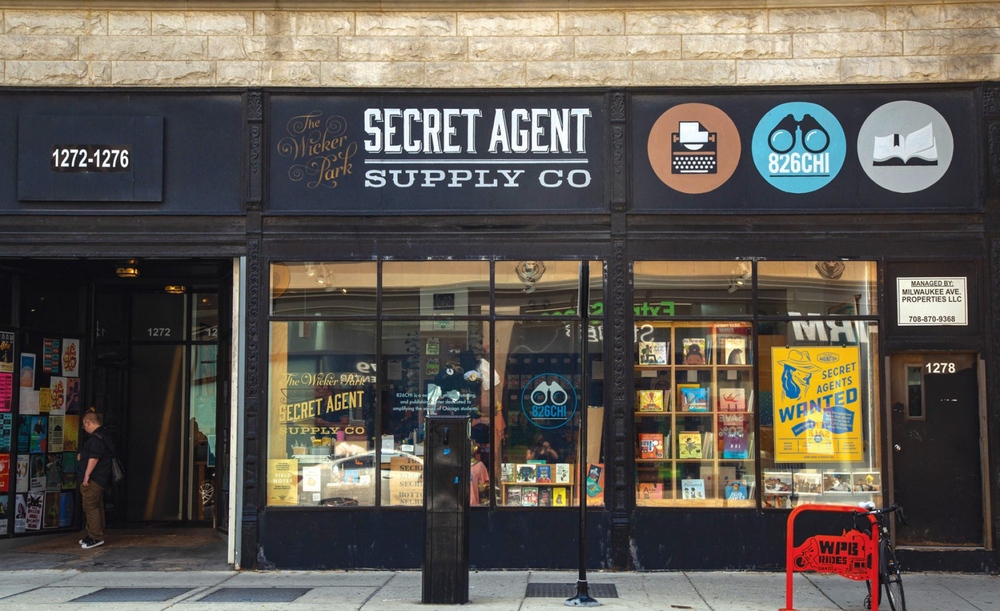

I was enrolled in girls 4 science since the 4th grade maybe younger. Girls 4 science is a free program that teaches girls in chicago how to do various things with in the field of science. These things can invole things such as compter science, biology, chemestry, anatomy, etc at young ages to be able and get ahead of the game. This was something that i enjoyed at the time but eventually grew from due to certain reasons. I will say that girls for science was a learning experience and was exciting to be in. One thing i do remember from attending this program was when we took a feild trip to see how various cancers affected the body. We were able to see this through an open autopsy. It was definately something different and supriseing i would recommend any readers to try and attend to see how they like it.
House in the woods is a summer camp that i attended since the age of nine. it was one of the best experiences i had in my childhood. We did things like canoed, swam, tree climbing. We also played games like rainbow tag, hound and hare,etc. We had free time and were able to learn skills like archery, basketball, cooking, arts and crafts,etc.this summer camp allowed me to build a lot of good connections and showed me how to be a leader in society and take responibility for myself as well as other. I would definately reccomend going here to get away from technology and the world and to just learn how to be in a community with one another learn how to socialize etc.
Marwen is an art institution that i have attended since the fith grade it is one of the greatest things i participated in it taught me how to do things like sew, how to make pottery, how to develope photos and just express my creativity in a physical manner. I took multiple courses at this instituiton. These course have helped me grow as an individiual and expand my thoughts to make them unique. I am able to put litte pieces together fro here and there and make them in to me and what i represent. Once more it is something i would definately reccomend to all those who are my are and above. The program stops in twelth grade. The program not only does this they also helps you plan your future and create things like profolios if you are intrested to continue an art carreer.
Douglas park is a park district that offers art classes, life gaurd training, dance, etc. It is a program that is held in the summer as well. It helps you form connections with multiple people and helps you come out of your shell to do new things. They offer kids to take place in plays and to volenteer in helping with the community. They allow the community to have open swims and take lessons if needed.
826 chi is a tutoring program that helps kids from the first grade to the 8th. This program helped me get my homework done so that i would be able to have time to myself and not have to worry. It helped me to build connections and to expand my writing skills. We always had to write answers to a prompt so that at the end of the day we could chose a pice of writing we wanted to publish and show the world. Hundreds of kids would then put their piece into a book named by popular rule and would be distributed.
Chis&e was also anothe science program that i participated in as a child. They taught me the basics of science and what an ion, electron, proton,etc was. We did basic experiments to analyze the chemical reactions between certain elements in the table. We experimented with soda, vinegar,baking soda,pennies, peroxide etc. The classes taught me how to do basic wiring to build robotic devices, they taught me how acceleration work with speed and distance and about the gravitational pull the earth has to keep us afloat. Overall all of these programs have helped me be the person i am today.